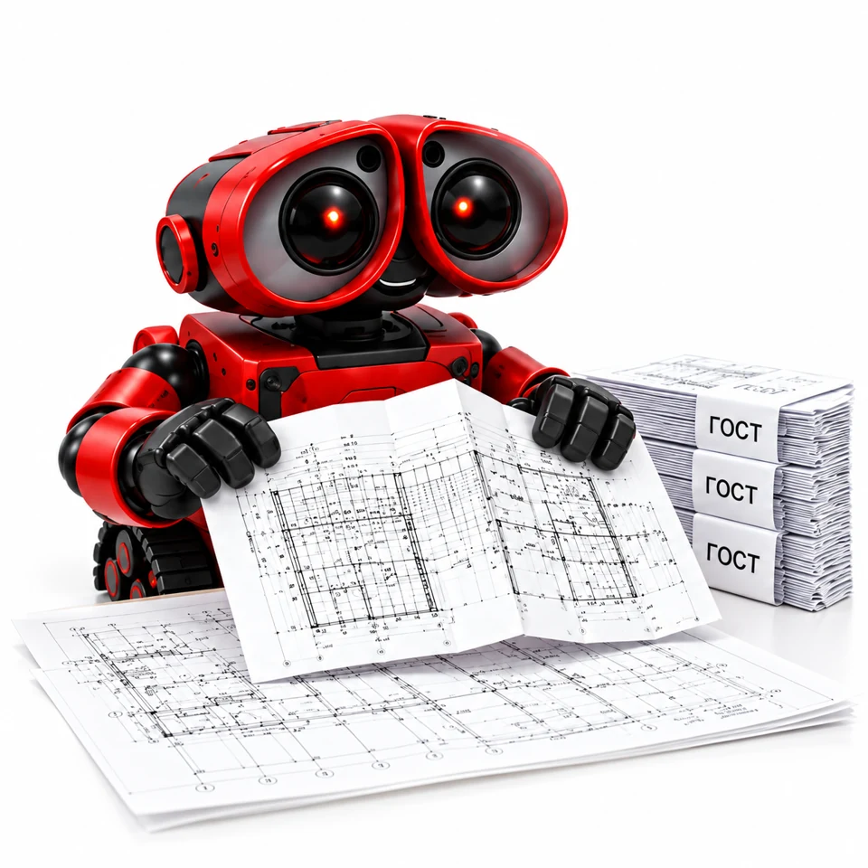

Стоимость онлайн
Параметры и состав цены перед заказом
Аккуратно сложим чертежи для хранения или подшивки. Исходный формат, основная надпись и схема сборки учитываются до начала работы.

Параметры и состав цены перед заказом
Файл или оригиналы согласуем до работы
Барнаул, Строителей, 11 · отправка по России
Укажите параметры заказа — стоимость пересчитывается сразу.
Ориентиры для конкретных параметров. Вы можете открыть любой пример и изменить его.
10 готовых листов A1
240 ₽Рассчитать этот вариант25 готовых листов A2
300 ₽Рассчитать этот вариантA1×4 · 10 готовых листов
960 ₽Рассчитать этот вариантA4–A0 и удлинённые форматы. Для каждого формата добавьте отдельный расчёт в корзину.
Укажите конечный формат, полосу для крепления и требования принимающей организации.
Основная надпись должна остаться читаемой. Ориентацию и схему складывания согласуем до работы.
Выберите параметры, подготовьте файл или оригиналы. До запуска подтвердим стоимость, срок и детали.
Для типовых проектных листов используется автоматический фальцовщик, что позволяет быстрее собирать крупные комплекты и сохранять одинаковую схему сложения.
Заберите заказ в студии или согласуйте доставку. Проверим комплектность и упаковку.
Не общий шаблон: ниже — чек-лист именно для этой услуги, с её размером, обработкой и типом файла.
Чертежи + указание применяемой схемы/ГОСТ, конечного формата и необходимости полосы для подшивки.
Проверяем формат исходника, конечный размер, положение штампа и сторону подшивки.
Всё важное о заказе — в одном месте.
Услугу «Фальцовка чертежей по ГОСТ» можно заказать в студии «ТЕКСТ» в Барнауле по адресу пр-т Строителей, 11. Работаем Пн–Пт с 09:00 до 18:00.
Точная стоимость зависит от параметров заказа и рассчитывается онлайн на странице услуги.
Перед расчётом выберите параметры заказа. Доступные варианты: Форматы проектной документации, поддерживаемые калькулятором; отдельный расчёт по каждому формату; работа с готовыми чертежами или после печати. Калькулятор на этой странице пересчитывает стоимость по выбранной конфигурации.
До 25 000 ₽ — 1 рабочий день*. Для большей суммы срок = сумма заказа / 25 000 ₽ с округлением вверх. *После полного согласования макета.
Доступен самовывоз с пр-та Строителей, 11. Готовые тиражи отправляем по России транспортными компаниями; способ, срок и стоимость доставки согласуются до отправки.
Цена считается по выбранной конфигурации. Самовывоз — проспект Строителей, 11; готовые тиражи можем отправить по России после согласования перевозчика и стоимости.
Рассортируйте листы по форматам и сохраните понятную ориентацию основной надписи. Складки должны учитывать последующую подшивку, поэтому способ сборки проекта согласуют заранее. Фальцовка готовых оригиналов и печать нового комплекта — разные позиции заказа.
Форматы проектной документации, поддерживаемые калькулятором; отдельный расчёт по каждому формату; работа с готовыми чертежами или после печати.
Если чертежи уже напечатаны, они должны быть переданы без повреждений и с понятной ориентацией основной надписи. Нестандартные листы лучше согласовать до запуска.
В калькуляторе учитываются: Формат чертежа, Количество, шт.. Итог относится к выбранной конфигурации. Доставка согласуется отдельно.
До 25 000 ₽ — 1 рабочий день*. Для большей суммы срок = сумма заказа / 25 000 ₽ с округлением вверх. *После полного согласования макета.
Да. Добавьте нужные позиции в корзину и нажмите «Скачать расчёт PDF». В документе будут логотип ТЕКСТ, параметры, список услуг и цены. Это предварительный расчёт; стоимость и срок подтвердим перед производством.
Можно забрать заказ на проспекте Строителей, 11 в Барнауле. Курьерскую доставку и отправку по России, стоимость и срок согласуйте со студией.
Корзина сохраняет расчёт в вашем браузере. Подготовьте запрос, отправьте его вместе с файлами и согласуйте заказ со студией. После подтверждения параметров, макета и оплаты заказ передаётся в работу.
Рассортируйте листы по форматам и сохраните понятную ориентацию основной надписи. Складки должны учитывать последующую подшивку, поэтому способ сборки проекта согласуют заранее. Фальцовка готовых оригиналов и печать нового комплекта — разные позиции заказа.
Если чертежи уже напечатаны, они должны быть переданы без повреждений и с понятной ориентацией основной надписи. Нестандартные листы лучше согласовать до запуска.
Для типовых проектных листов используется автоматический фальцовщик, что позволяет быстрее собирать крупные комплекты и сохранять одинаковую схему сложения.